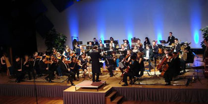
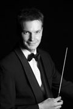

studentensymfonieorkest

 concerten
concerten
Ensuite zal tijdens de tournee de volgende concerten verzorgen:
- dinsdagavond 13 juli 2010: Medemblik, Bonifaciuskerk
- woensdagavond 14 juli 2010: Enkhuizen, Zuiderkerk
- zaterdagmiddag 17 juli 2010: Amsterdam, binnenplaats AHM
orkest
Symfonieorkest Ensuite is voortgekomen uit het strijkerensemble 'Ma Non Troppo' en is in de zomer van 2002 opgericht als ondervereniging van ESMG Quadrivium. Momenteel telt Ensuite ongeveer 25 leden, maar groeit nog steeds. Ensuite is een symfonieorkest dat de ambitie heeft om tot een volledige bezetting te groeien. Het orkest bestaat uit zowel strijkers, blazers en slagwerkers. Natuurlijk kan de bezetting licht variëren per werk dat op het repertoire staat en zonodig wordt het orkest aangevuld met gastspelers.
dirigent

Sinds 1 april 2009 is Ghislain Bellefroid dirigent bij Ensuite. Ghislain studeerde klarinet aan het Rotterdams Conservatorium bij Walter Boeykens en aan het Sweelinck Conservatorium bij Piet Honingh. Hier behaalde hij zijn diploma's voor Docerend en Uitvoerend Musicus. Tijdens zijn studie behaalde hij diverse prijzen in binnen en buitenland. Zo won hij in 1991 het concours van de stichting "Jong Muziektalent Nederland".
Naast klarinet is hij ook tweede fase afgestudeerd Hafa-directie bij Jan Cober en Gert Buitenhuis.
In 2003 behaalde Ghislain zijn diploma eerste fase orkestdirectie bij Kerry Woodward met een uitvoering van o.a. de vierde symfonie van Bruckner. Hij volgde masterclasses bij Jorma Panula, Arie van Beek, Ed Spanjaard, Roberto Benzi en Jan Stulen en dirigeerde zodoende al eens het Nederlands Promenade Orkest tijdens een concert in Amsterdam.
Ghislain is naast dirigent van Ensuite eveneens verbonden aan het orkest OBK Bennekom. Tevens dirigeert hij zijn eigen professionele ensemble "A Piacere". Dit ensemble speelt op projectbasis en is samengesteld uit musici van de diverse Nederlandse beroepsorkesten waaronder het Radio Philharmonisch Orkest en Het Gelders Orkest.